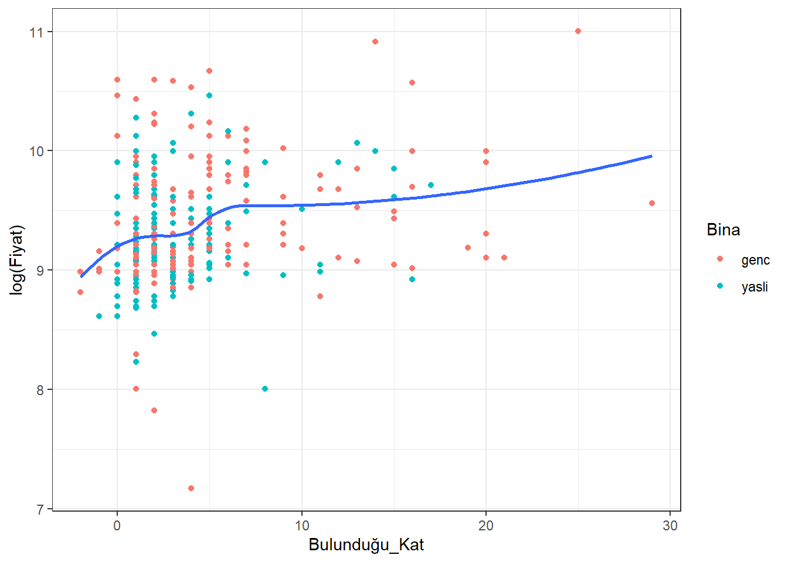
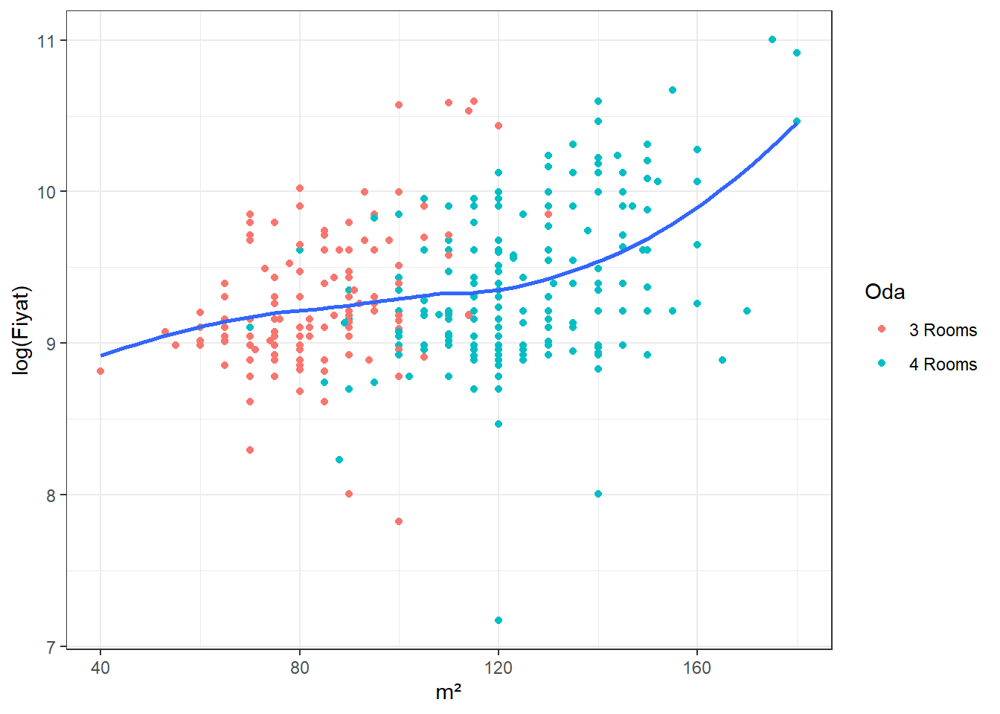
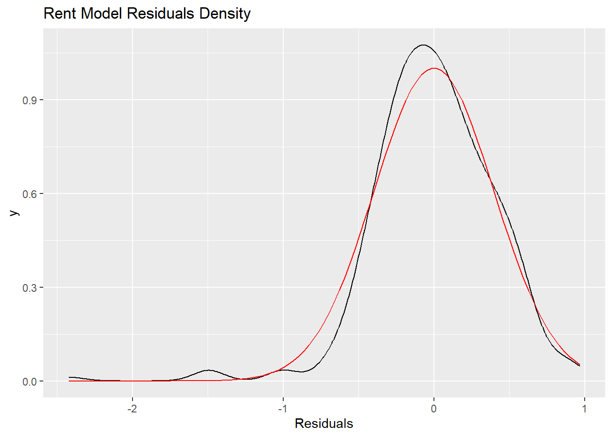

##
## Call:
## lm(formula = log(Fiyat) ~ Bulunduğu_Kat + Eşyalı + `m²` +
## Oda + sehir, data = tum_kiralik)
##
## Residuals:
## Min 1Q Median 3Q Max
## -2.4230 -0.2333 -0.0065 0.2576 0.9675
##
## Coefficients:
## Estimate Std. Error t value Pr(>|t|)
## (Intercept) 9.318916 0.181940 51.220 < 2e-16 ***
## Bulunduğu_Kat 0.018682 0.005044 3.704 0.000249 ***
## Eşyalı 0.117878 0.048891 2.411 0.016453 *
## `m²` 0.009559 0.001272 7.513 5.48e-13 ***
## Oda -0.266371 0.068910 -3.866 0.000134 ***
## sehir -0.344281 0.044873 -7.672 1.92e-13 ***
## ---
## Signif. codes: 0 '***' 0.001 '**' 0.01 '*' 0.05 '.' 0.1 ' ' 1
##
## Residual standard error: 0.4014 on 330 degrees of freedom
## (2 observations deleted due to missingness)
## Multiple R-squared: 0.3514, Adjusted R-squared: 0.3416
## F-statistic: 35.76 on 5 and 330 DF, p-value: < 2.2e-16As seen in the summary table of the regression, all explanatory variables are significant. It is possible to say that as the floor of the house increases, the rent increases by 1.8%. As a result, the houses in the attic may have heating problems, which is out of this argument. It is possible to say that as the floor of the house increases, the rent increases by 1.8%. As a result, the houses in the attic may have heating problems, which is out of this argument. In addition, you get away from the noise of the street as the apartment you own is located on the upper floors. You can have a better view and as long as you are not in the attic, you will not have a heating problem as you will be on the mezzanine. Such reasons may cause the rents of high-floor houses to be higher.
If the house you want to rent is furnished, this increases its price by approximately 11%. The result of the regression tells us this. The reason for this is not so complicated. You pay more rent because you get more services. When you rent a furnished house, you do not have to spend money to buy furniture for your house. However, you do this indirectly by paying more rent. In addition, if you plan to stay in that house for a long time, the furnished house probably won’t make sense.

It is possible to say that as the floor of the house increases, the rent increases by 1.7%. As a result, the houses in the attic may have heating problems, which is out of this argument. In addition, you get away from the noise of the street as the apartment you own is located on the upper floors. You can have a better view and as long as you are not in the attic, you will not have a heating problem as you will be on the mezzanine. Such reasons may cause the rents of high-floor houses to be higher.

According to the results of the regression, it is possible to say that the rent increases by approximately 1% as the size of the house increases.
According to the results of the regression, 4-room houses have a 26% cheaper rental price than 3-room houses. Although this may seem strange at first glance, there may be many different reasons behind it. A fact to consider is that people now generally live alone in big cities and therefore demand smaller houses. In Ankara/Bahçelievler, where we obtained some of our data, 47% of the tenants are single. Data regarding the marriage age of women over time shows that in the 1950’s, the earliest age was 19. Compared to today’s time, that age has increased to 25.6. This indicates that people are now usually single for a longer time, which can explain higher demand towards homes with less rooms or space. Most of the 3 room houses in our dataset are in the young building category (< 15 years). This shows us that the 3 room houses are newer. In other words, the biggest factor in 3-room houses being more expensive than 4-room houses is that those houses are newer.
vif(model)## Bulunduğu_Kat Eşyalı `m²` Oda sehir
## 1.106538 1.059852 2.328053 2.412202 1.040484There is no multicollinearity problem since all the VIF values less then 10.
Let’s come to our sharpest conclusion. Houses in Ankara have 45% lower rental prices than houses in Izmir. There are of course many reasons for this. We took care to obtain our data from nearby socioeconomic regions. While we chose the Ümitköy district, where people with relatively higher incomes live, in Ankara, we also preferred Denizbostanlısı district, where people with higher incomes live in İzmir. In addition, we preferred Bahçelievler from Ankara and Nergiz from İzmir for a relatively lower income demographic. Within the EVDS database of the CBRT, there can be data found regarding the price index of housing based on city. By comparing the indexes for Ankara and Izmir, one can see that Izmir has a higher index, meaning that housing is usually more expensive compared to Ankara. So, our regression results are consistent with the CBRT data.
Both of the two districts we chose from Izmir are very close to the sea. Some houses even have a direct sea view. This is a factor that greatly increases the value of the houses. In addition, Denizbostanlısı and Nergiz İzmir’s most popular and central places; On the other hand, the places we chose from Ankara are not the most popular places in Ankara, although it is the center. Here, too, İzmir comes to the fore. In addition, we have determined that many shopping malls have been opened in Denizbostanlısı and Nergiz in recent years. This increased the popularity of the region and increased house prices. These are somewhat qualitative secondary data. There is an important quantitative situation that directly affects the outcome of our data. Although the demand of foreign investors for Ankara is higher than the demand for İzmir, their demands for İzmir are generally concentrated in this region. There is no such specific concentration in Ankara. With the increase in demand for this region, the rent prices of the region are also increasing.
Another finding from our dataset worth mentioning is that the number of homes with 3 rooms considered to be “new” (genc) exceeds the number of homes with 4 rooms also considered as new. This can be a potential explanation as to why properties with fewer rooms can be sold or rented at a higher price.

After running our regression of the rent model, we graphed the distribution of the residuals from our model and compared it to a normal bell curve to check for the normality of errors. The residual distribution is shown in black and the normal distribution is in red. As you can see, the residuals from our model have a similar distribution compared to the normal curve. The error term from a regression should have a mean of 0 and the residuals from our rent model have a mean of 2.820906e-18, which is basically 0.